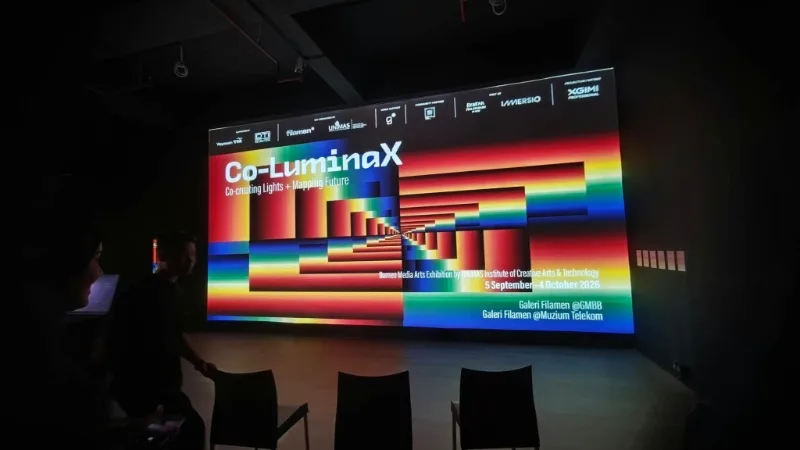
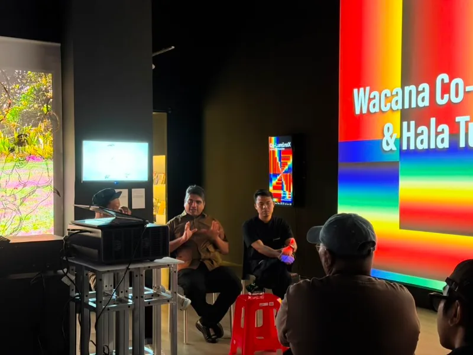
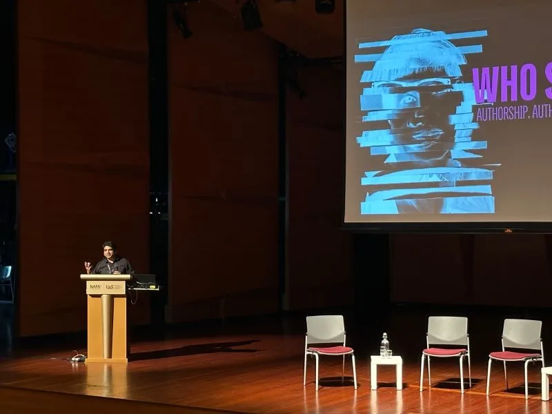
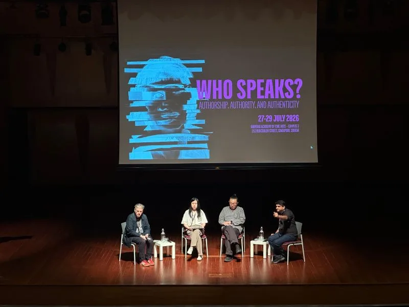
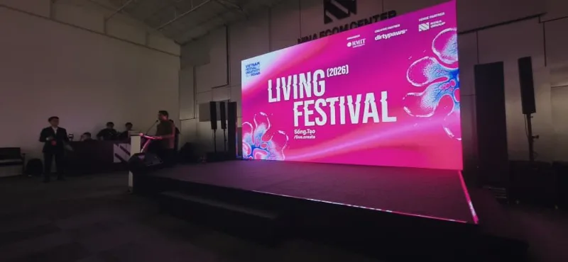
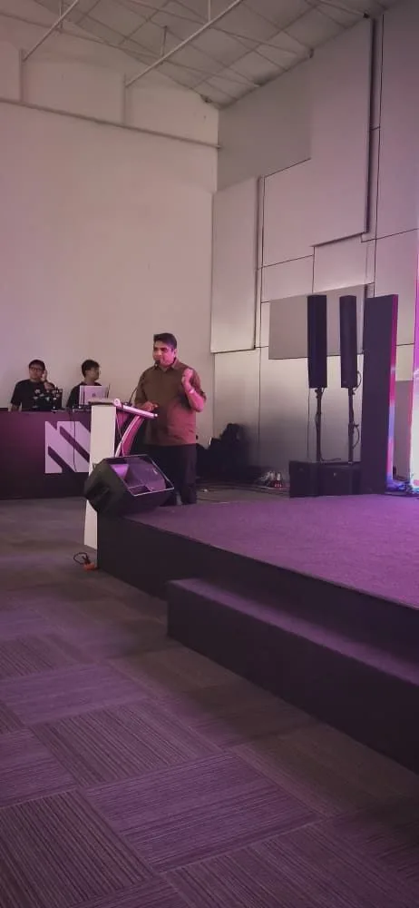
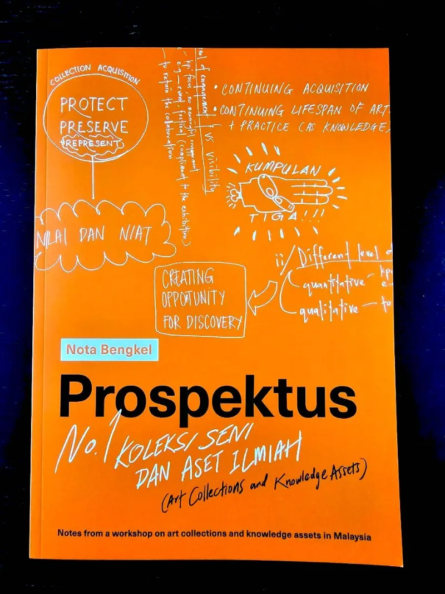
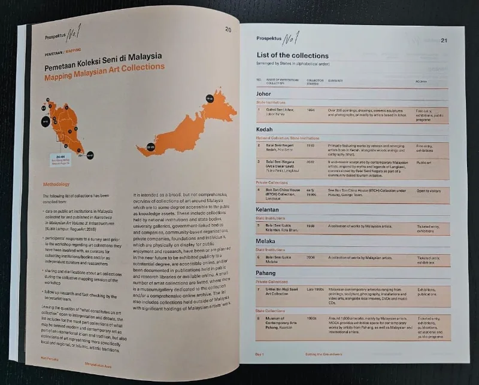

The Possibility of Culture in a Technological Future
How can culture evolve alongside technological advancements, and what possibilities emerge when tradition meets innovation? I was the main speaker for this installment of the Arts & Design Talks, part of the series Future Media and Cultural Perspective, sharing perspectives on the possibilities of culture in an increasingly technological world.
The panel brought in colleagues from the School of Design at BINUS University: Ahmad Faisal Choiril Anam Fathoni (Animation), Ernest Irwandi (Master of Design), Polniwati Salim (Interior Design) and Ratna Dewi Paramita (Fashion Design), with Wildan Ali as moderator.
Animated poster for the talk, with a portrait of Dr Roopesh Sitharan and the title The Possibility of Culture in a Technological Future.Animated poster for the Arts & Design Talks, Future Media and Cultural Perspective, listing the day's four talks.
Local ways of knowing, at Co-LuminaX
I was honoured to participate in a panel discussion exploring local cosmological worldviews and knowledge in the Malaysian context, and their role within the new media art scene. This participation was made possible through an invitation from Dr. Mohamad Faizuan Mat from Universiti Malaysia Sarawak (UNIMAS), in conjunction with the Co-LuminaX exhibition: Co-Creating Light, Mapping Futures, which presents student works from FACA, UNIMAS.
It was particularly valuable to reflect on how emerging technologies and new media practices can engage with local ways of knowing, creating opportunities to re-examine our cultural contexts while imagining new possibilities for the future. Grateful for the invitation, the exchange of perspectives, and the opportunity to be part of this conversation.

Co-LuminaX, a Borneo media arts exhibition by the UNIMAS Institute of Creative Arts & Technology, 5 September to 4 October 2026.

The panel, Wacana Co-LuminaX.
Living Archives, at Who Speaks?
Thank you, NAFA and Laura Hayes, for the invitation to be the discussant and moderator for the session Living Archives as part of the APARN + ADPRex Conference.
The panel brought together close friends and brilliant practitioners, Andrew Stiff and Adrian Tan, alongside Yijia Cao, whose perspectives enriched the conversation. Each of them approached the idea of archives from diverse positions, reflecting on how archives inform, challenge, and expand their artistic practices and research.
The discussion explored the possibilities of rethinking and remaking archives, not simply as fixed repositories of the past, but as evolving structures that are specific, attentive to context, and open to diverse perspectives. The inherent tension within archives, where they function both as authoritative records and inclusive spaces for multiple narratives, became a productive point of departure for critical dialogue, thoughtful questioning, and provocative artistic approaches.

Who Speaks? Authorship, Authority, and Authenticity. Image courtesy of Arron Teo.

The session Living Archives. Image courtesy of Arron Teo.
Curating with peer review
A deep thank you to Kok Yoong Lim for the invitation to be part of the curatorial process for the peer-reviewed art exhibition at the Vietnam Festival of Creativity and Design.
This project presented me with a particularly interesting curatorial problem: how does a curator exercise autonomy when the selection of works is entirely undertaken by external peer reviewers? In this case, the works, contributors, and much of the exhibition's parameters were already determined. My role therefore was not to exercise curatorial authority through selection, but to work within these conditions and consider how these works could be brought into meaningful relationships with one another and with the audience.
This opened up many productive questions for me around the relationship between peer review and curation. What happens when a system associated with academic rigour becomes part of an exhibition-making process? How might peer review and curatorial practice entangle, complement, or challenge one another? And importantly, what kinds of models might allow these different systems of value, knowledge, and judgement to operate productively together?
I am especially grateful to my co-curator, Rachel Jahja, for the wonderful collaboration throughout this process, and to my good friends and colleagues at RMIT Vietnam for the opportunity to explore these ideas together.

Living Festival 2026, the Vietnam Festival of Creativity and Design.

Speaking at the festival.
PROSPEKTUS 1: Koleksi Seni dan Aset Ilmiah
I’m excited to share that this publication is finally out! It brings together the proceedings of a three-day workshop held from 9 to 11 February 2026 at Muzium & Galeri Tuanku Fauziah (MGTF), Universiti Sains Malaysia (USM), as part of the pilot programme PROSPEKTUS 1: Koleksi Seni dan Aset Ilmiah (Art Collections and Knowledge Assets).
At its heart, PROSPEKTUS seeks to create a platform for on-the-ground stakeholders to collectively think through the complexities of art practice and its expanded field, fostering exchanges that generate new meanings, perspectives and knowledge. Through an engagement with Malaysia’s material culture, PROSPEKTUS 1 meant to question how art collections and knowledge assets are positioned, valued and understood within local contexts.
Importantly, this is not a comprehensive catalogue of Malaysian art collections. Rather, it opens up a space for critical reflection: What kinds of value do our collections produce? What infrastructures do they sustain? And whose stories, knowledge and histories remain unspoken?
Team PROSPEKTUS: Azzad Diah, Nur Hanim Khairuddin, RogueArt (Rachel Ng & Beverly Yong), Roopesh Sitharan and Sau Bin Yap.

Prospektus No. 1, Nota Bengkel: notes from a workshop on art collections and knowledge assets in Malaysia.

Mapping Malaysian art collections.
Chapalang
A touring exhibition co-curated with Gunalan Nadarajan, on vernacular, “making do” approaches to technology in Southeast Asia, shown at Artspace @ Helutrans, Singapore, from 22 January to 1 February 2026.
ILHAM Art Show 2025
My work was selected for the ILHAM Art Show 2025, one of 20 artists chosen through a competitive open-call submission and regional jury process.
Organised by ILHAM Gallery, the exhibition highlights original works by Malaysian and Malaysia-based artists, and is an important platform for creative experimentation and the discovery of new artistic voices, across installation, film, painting, mixed media and new media.
The panel discussion at Lawangwangi Creative Space sparked meaningful conversations about regional camaraderie, the mapping of practices at the intersection of art and technology, and the infrastructures that sustain work occupying a liminal space between the art and science communities. It was particularly inspiring to hear diverse perspectives from across Southeast Asia, revealing both shared concerns and unique local contexts.
More importantly, the discussion reaffirmed the importance of building stronger regional networks and support systems for practitioners whose work often falls between established disciplinary boundaries. It reinvigorated my passion for the arts and renewed my interest in exploring the cultural implications of science and technology within the Southeast Asian context.
The exchange served as a reminder that some of the most compelling and urgent conversations emerge precisely from these intersections, where creativity, critical inquiry, and technological engagement come together to imagine new possibilities for the region.